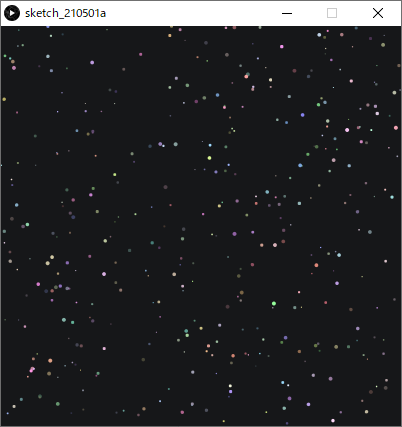
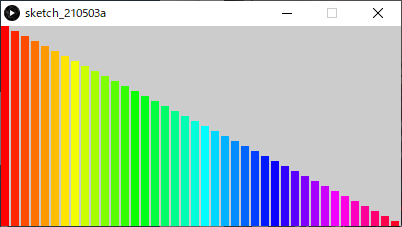

Processingの基本
Processingのデータ
ファイル形式（拡張子）: .pde スケッチとも呼ばれる． スケッチが格納された同名のフォルダをスケッチブックとも呼ぶ． スケッチ(.pde)がフォルダ(スケッチブック)に格納されているファイル構造を壊さないよう注意． （スケッチブックだけを移動させる等）
フォント（エディタ・コンソール）の変更（任意）
変更方法：ファイル>設定>エディタとコンソールのフォント デフォルトのフォント Source Code Pro は以下のことができない．
- プログラム及びコメントへの日本語（全角）入力
- コンソールへの日本語（全角）出力
- これらを有効にするには，日本語対応のフォントに変更してください． MS ゴシック など

プログラムを書く際の最低限のルール
- 半角英数と数字を用いる
- 単語ごとにスペースを入れて区切る
- 文末にはセミコロン（;）を入れる（忘れがち！）
- 大文字と小文字の区別があるので注意
Processingの命令
Processingには，線を描く命令や，円を描く命令，色を変える命令など，様々な命令が用意されている． 基本的にはプログラムは上から下へ，順番に逐次実行されていく． 命令の名前は一つの単語となっており，スペースを含まない． 基本的には小文字が命令の名前に用いられるが，二単語が複合した命令は，2単語目に大文字が用いられる．例：rectMode(); あらかじめ用意された命令を入力すると，エディタ上では色が変わる． これらの命令は，プログラムにおける関数の一種である．
コンソールへの出力 print()
- プログラム処理の内容を視覚化し，問題が起こった場合原因を特定しやすくする．
- 変数の中の値をトレース（監視）することができる．
コンソールエリアに任意の値を出力する．
xxxxxxxxxxprint( "文字列" );print( 値or変数 );print( "文字列" + 値or変数 ); // 文字列と値や変数を+を用いてつなげることも可能改行を含めたい場合
xxxxxxxxxxprintln( 上記と同様のフォーマット );例
xxxxxxxxxxString s = "The size is ";int w = 1920;int h = 1080;print(s);print(w, "x", h);// コンソールには以下のように出力される:// The size is 1920 x 1080xxxxxxxxxxprint("begin- ");float f = 0.3;int i = 1024;print("f is " + f + " and i is " + i);println("-end");// コンソールには以下のように出力される:// begin- f is 0.3 and i is 1024 -end座標系について
画面はピクセルというモザイク状の点の集まりによって表現される． Processingでは左上を原点（0, 0）とし，右下に向かって座標値が大きくなる．

画面のサイズを決める
xxxxxxxxxxsize( 横のピクセル数, 縦のピクセル数 );画面のサイズを取得する
必ずsize()記述以後に記述する必要がある．
例
xxxxxxxxxxwidth // 横のピクセル数height // 縦のピクセル数
色を扱う
カラーモードの設定
色を扱うにはまず、プログラムで使用するカラーモードを指定する必要がある． プログラム中に明示的に指定が無ければ，RGBモードが使用される．
xxxxxxxxxxcolorMode(RGB, 最大値);colorMode(HSB, 最大値);colorMode(HSB, 色相の最大値, 彩度の最大値, 輝度の最大値);デフォルトのカラーモード
カラーモードを明示的に指定していない場合は，以下の初期設定が適用されている．
xxxxxxxxxx// 使用するカラーモデルはRGB，最大値は255colorMode( RGB, 256 );例：
xxxxxxxxxx// 使用するカラーモデルをRGBに設定，最大値を100とする．colorMode( RGB, 100 );// カラーモデルをHSBに設定し，色相の最大値を360とし，彩度と輝度の最大値1,0とする．colorMode( HSB, 360, 1.0, 1.0 );色の書式
各アルファベットの位置に具体的な数値が入る RGB
xxxxxxxxxxr, g, b例：0.1, 0, 1.0RGB, alpha
xxxxxxxxxxr, g, b, a
gray
xxxxxxxxxxg
gray, alpha
xxxxxxxxxxg, a
HSB
xxxxxxxxxxh, s, b
HSB, alpha
xxxxxxxxxxh, s, b, a
色相と彩度
xxxxxxxxxx// 下のグラデーション図のプログラムnoStroke();colorMode(HSB, 100); // カラーモード:HSB, 各値の最大値100for (int i = 0; i < 100; i++){ for (int j = 0; j < 100; j++) { stroke(i, j, 100); point(i, j); }}
背景に色を付ける
xxxxxxxxxxbackground( 色の書式 ); // colorMode設定に依存例：
xxxxxxxxxxbackground(255, 204, 0);
アンチエイリアスをかける
xxxxxxxxxxsmooth();アンチエイリアスを解除する
xxxxxxxxxxnoSmooth();図形描画
線の色を変える
xxxxxxxxxxstroke( 色の書式 ); // colorMode設定に依存例
xxxxxxxxxxstroke(204, 102, 0);rect(30, 20, 55, 55);線を消去する
xxxxxxxxxxnoStroke();例
xxxxxxxxxxnoStroke();rect(30, 20, 55, 55);
線の太さを設定する
xxxxxxxxxxstrokeWeight( 太さ );例
xxxxxxxxxxstrokeWeight(1); // Defaultline(20, 20, 80, 20);strokeWeight(4); // Thickerline(20, 40, 80, 40);strokeWeight(10); // Beastlyline(20, 70, 80, 70);
図形の塗りつぶし色を設定する
xxxxxxxxxxfill( 色の書式 ); // colorMode設定に依存例1
xxxxxxxxxxcolorMode(RGB, 256);fill(204, 102, 0);rect(30, 20, 55, 55);
例2
xxxxxxxxxxcolorMode( HSB, 360, 1.0, 1.0 );fill(80, 0.8, 0.9);rect(15, 10, 55, 55);
例3
xxxxxxxxxxcolorMode(RGB, 256); fill(204, 102, 0);rect(15, 10, 55, 55); fill(0, 102, 200, 80); // アルファ80rect(30, 20, 55, 55);
塗りつぶしを消去する
xxxxxxxxxxnoFill();例：rect(15, 10, 55, 55);noFill();rect(30, 20, 55, 55);
点を描画する
xxxxxxxxxxpoint( x座標, y座標 );例
xxxxxxxxxxstroke( 255, 0, 0 ); // 色を指定する場合はstroke()を使う．point( 50,50 );point( 51,50 );point( 50,51 );point( 51,51 );
線を描画する
xxxxxxxxxxline( 始点x座標, 始点y座標, 終点x座標, 終点y座標 );例1
xxxxxxxxxxline(30, 20, 85, 75);
例2
xxxxxxxxxxstroke(255,0,0); // Rline( 20, 20, 40, 40 );stroke(0,255,0); // Gline( 40, 40, 50, 70 );stroke(0,0,255); // Bline( 50, 70, 80, 80 );
三角形を描画する
xxxxxxxxxxtriangle( 頂点1のx値, 頂点1のy値, 頂点2のx値, 頂点2のy値, 頂点3のx値, 頂点3のy値 );例
xxxxxxxxxxtriangle(30, 75, 58, 20, 86, 75);
矩形（長方形）を描画する
左上の座標と大きさを指定（初期設定）
xxxxxxxxxxrectMode(CORNER); // 他にrectMode()を使用している箇所が無ければ，不要rect( 左上x座標, 左上y座標, 矩形の幅, 矩形の高さ );
中心の座標を指定
xxxxxxxxxxrectMode(CENTER);rect( 中心x座標, 中心y座標, 矩形の幅, 矩形の高さ );
左上と右下の座標を指定
xxxxxxxxxxrectMode(CORNERS);rect( 左上x座標, 左上y座標, 右下x座標, 右下y座標 );
例
xxxxxxxxxxrectMode(CORNER);rect(30, 20, 55, 55);
関連する命令：正方形の描画
四辺形を描画する
自由な四辺形を描くことができる．
xxxxxxxxxxquad( 頂点1のx値, 頂点1のy値, 頂点2のx値, 頂点2のy値, 頂点3のx値, 頂点3のy値, 頂点4のx値, 頂点4のy値 );例
xxxxxxxxxxquad(38, 31, 86, 20, 69, 63, 30, 76);円の中心と縦横の直径を指定
xxxxxxxxxxellipseMode(CENTER); // 他にellipseMode()を使用している箇所が無ければ，不要ellipse( 中心のx座標, 中心のy座標, 横の直径, 縦の直径 );円の中心と縦横の半径を指定
xxxxxxxxxxellipseMode(RADIUS);ellipse( 中心のx座標, 中心のy座標, 横の半径, 縦の半径 );例
xxxxxxxxxxellipseMode(CENTER);ellipse(56, 46, 55, 55);
関連する命令：正円の描画
円弧を描画する
度（度数法）をラジアン（弧度法）に変換する方法 指定する角度は，ラジアン単位である必要がある
xxxxxxxxxx// θ = θ° × π / 180 [rad]radians( 度 ); // この命令で任意の角度をラジアンに変換できる．おおまかな度とラジアンの対応QUARTER_PI : 45°HALF_PI : 90°PI : 180°TWO_PI : 360°オープンな弧を描画する
xxxxxxxxxxarc( 中心のx座標, 中心のy座標, 横の直径, 縦の直径, 弧の始まりの角度, 弧の終わりの角度, OPEN );例
xxxxxxxxxxarc(50, 50, 80, 80, 0, PI+QUARTER_PI, OPEN);
閉じた弧を描画する
xxxxxxxxxxarc( 中心のx座標, 中心のy座標, 横の直径, 縦の直径, 弧の始まりの角度, 弧の終わりの角度, CHORD );例
xxxxxxxxxxarc(50, 50, 80, 80, 0, PI+QUARTER_PI, CHORD);
パイ状に描画する
xxxxxxxxxxarc( 中心のx座標, 中心のy座標, 横の直径, 縦の直径, 弧の始まりの角度, 弧の終わりの角度, PIE );例
xxxxxxxxxxarc(50, 50, 80, 80, 0, PI+QUARTER_PI, PIE);
曲線を描画する
4点を結ぶ曲線の中間2点間が描画される（スプライン曲線）
xxxxxxxxxxcurve( 点1のx値, 点1のy値, // 制御点1 点2のx値, 点2のy値, // 描画点1 点3のx値, 点3のy値, // 描画点2 点4のx値, 点4のy値 ); // 制御点2例
xxxxxxxxxxnoFill();stroke(255, 102, 0);curve(5, 26, 5, 26, 73, 24, 73, 61);stroke(0);curve(5, 26, 73, 24, 73, 61, 15, 65); // 中間2点間（黒）stroke(255, 102, 0);curve(73, 24, 73, 61, 15, 65, 15, 65);
ベジェ曲線を描画する
xxxxxxxxxxbezier( 点1のx値, 点1のy値, 制御点1のx座標, 制御点1のy座標, 点2のx値, 点2のy値, 制御点2のx座標, 制御点2のy座標 );例
xxxxxxxxxxnoFill();stroke(255, 102, 0);line(85, 20, 10, 10); // 点1から制御点1への線（橙）line(90, 90, 15, 80); // 点2から制御点2への線（橙）stroke(0, 0, 0);bezier(85, 20, 10, 10, 90, 90, 15, 80); // 得られた曲線(黒)
多角形を描画する
複数の命令で構成される． はじめにbeginShape();と書き，次いで必要な頂点数だけ vertex( x座標, y座標 ); を記述する． 最後に endShape(); で閉じる． ※なお、endShape(CLOSE)と指定すると、閉じた形状となる
xxxxxxxxxxbeginShape(); // 形状の開始宣言vertex( x座標, y座標 ); // 頂点座標（頂点の数だけ書く。複数書いてよい）endShape(); //形状の終了宣言例
xxxxxxxxxxbeginShape();vertex(20, 20);vertex(40, 20);vertex(40, 40);vertex(60, 40);vertex(60, 60);vertex(20, 60);endShape(CLOSE);
座標変換（平行移動，回転，拡大縮小）
前提知識
- 座標≒原点
- Processingでは初期座標がスクリーン左上(0,0)に設定されている．
- この座標を移動，回転，拡大縮小することを座標変換という． 公式チュートリアル
平行移動
xxxxxxxxxxtranslate( x移動量, y移動量 );例
平行移動させる前
xxxxxxxxxxrect(20, 20, 40, 40 );
平行移動後
xxxxxxxxxxtranslate(60, 80);rect(20, 20, 40, 40);
利点
入れ子状の構造の繰り返しがシンプルにできる
例
家のような図の描画
xxxxxxxxxxsize(400, 100);background(255); triangle(15, 0, 0, 15, 30, 15);rect(0, 15, 30, 30);rect(12, 30, 10, 15);
家のような図の複数描画
xxxxxxxxxxsize(400, 100);background(255); // 一つ目triangle(15, 0, 0, 15, 30, 15);rect(0, 15, 30, 30);rect(12, 30, 10, 15);translate(40, 0); // x軸方向に40移動// 二つ目triangle(15, 0, 0, 15, 30, 15);rect(0, 15, 30, 30);rect(12, 30, 10, 15);translate(40, 0); // x軸方向にさらに40移動// 三つ目triangle(15, 0, 0, 15, 30, 15);rect(0, 15, 30, 30);rect(12, 30, 10, 15);
回転
座標を原点を中心に時計回りに回転する．
xxxxxxxxxxrotate( 角度 ); // 単位：ラジアンラジアンに慣れていない人はこう書くとよい．
xxxxxxxxxxrotate( radians( 角度 ) ); // 度数法をラジアンに変換※wiki:図形描画の円弧の項目も参照してください
例1
矩形を45°回転させる（スクリーン左上を中心に回転してしまっている例）
xxxxxxxxxxsize(200, 200);background(255);fill(192);noStroke();rect(40, 40, 40, 40);rotate(radians(45)); // 45°時計回りに回転fill(0);rect(40, 40, 40, 40);
例2
矩形を45°回転させる(正しい例)
- 原点座標を矩形の左上に移動させる
- 座標を回転させる
- 原点に矩形を描画する
xxxxxxxxxxsize(200, 200);background(255); fill(192);noStroke();rect(40, 40, 40, 40);translate(40, 40); // 原点を矩形の左上に移動rotate(radians(45));fill(0);rect(0, 0, 40, 40); // 原点に二つ目の矩形を描画
拡大縮小
xxxxxxxxxxscale( 拡大率 );scale( x拡大率, y拡大率 );例
矩形の大きさだけでなく，x,y座標値も拡大されていることに注目
xxxxxxxxxxsize(200,200);background(255);stroke(128);rect(20, 20, 40, 40);stroke(0);scale(2.0);rect(20, 20, 40, 40);
座標系の保存と復帰
詳細は行列の計算が関連することもあり難解であり，本授業では掘り下げない． 任意の場所に記述し，使うことができれば問題ない．
座標系の保存
xxxxxxxxxxpushMatrix();座標系の復帰
xxxxxxxxxxpopMatrix();例
xxxxxxxxxxsize(500, 500);pushMatrix(); // 座標系の記憶 translate(250, 250); // 座標系の移動rect(0, 0, 50, 50); // 平行移動後の位置に描画されるはず popMatrix(); // 座標系を元に戻すrect(0, 0, 50, 50); // スクリーン左上に描画されるはず
演算と変数
文と式
文 Statement
- 手続きを表す．
- プログラムは基本的に文から構成される．
- 逐次実行される(手続き型言語).
- セミコロン「；」 で区切られている部分が一つの文となる．
xxxxxxxxxxsize(200,200); // 文rectMode(CENTER); // 文rect(100,10020,100); // 文主に二種存在する．
- 宣言文 Declarative Statement
- 命令文 Imperative Statement
xxxxxxxxxxint a; // 宣言文a = a + 1; // 命令文式 Expression
コンピュータにとっての「計算」を表す表現
式は基本的には文の中に含まれている（存在する）．
主に以下の要素から構成される．
- 値
- 変数
- 演算子 Operator
- 関数
| line( 0, 0, 0, a + 1 ); // 式 line( 0, 0, 0, a + 1 ); // 値 line( 0, 0, 0, a + 1 ); // 変数 line( 0, 0, 0, a + 1 ); // 演算子 line( 0, 0, 0, a + 1 ); // 関数 line( 0, 0, 0, a + 1 ); // 文 |
|---|
算術式
四則演算（+-×÷）を表す式
| 計算 | 種類 | 式 | 演算子 |
|---|---|---|---|
| 足し算 | 加算 | a + b | プラス |
| 引き算 | 減算 | a - b | マイナス |
| かけ算 | 乗算 | a * b | アスタリスク |
| 割り算 | 除算 | a / b | スラッシュ |
例
xxxxxxxxxxprint("answer=");println(1+2);括弧を使った計算
例
xxxxxxxxxx(6-4)/(2+3)(2*(3+7))/5 // 乗算*は省略できないことに注意演算優先順位
算数の四則計算に準じる 左から逐次実行されるわけではない
| 優先度 | 種類 | 演算子 |
|---|---|---|
| 高い | 括弧(カッコ) | ( ) |
| 乗算 | * | |
| 除算 | / | |
| 加算 | + | |
| 低 | 減算 | - |
変数
- 変数とは，数値などのデータを入れて保持しておくための入れ物であり，現実世界の保管箱のようなものである．
- 関数や式に組み込むことで，中の値を参照したり書き換えたりすることができる．
変数の要素
- 型
- 変数名
- 値
型
データ型とも言う． 変数は決められた型を持ち，入れられるデータの種類が決まっている．
- 整数型 Integer 値として小数は持てない整数の型
xxxxxxxxxxint // 2,147,483,647 ~ -2,147,483,648- 実数型 floating-point numbers 値として小数を持てる型
xxxxxxxxxxfloat // 3.40282347E+38 ~ -3.40282347E+38 32bitdouble // 3.40282347E+38 ~ -3.40282347E+38 64bit, float型より広い範囲を保持できる E+38 は「10の38乗」の意宣言
変数を使うには，宣言文によって変数の宣言を行う必要がある．
- (データ)型の指示
- 変数名の決定
- 初期値の代入（必須ではない）
xxxxxxxxxx型␣変数名; // 宣言のみ型␣変数名 = 値 or 数式; // 宣言+初期化型変数名
- 変数は，変数名によって，その中に入っている値を参照することができる．
- 各変数は変数名により一意に定まる（ユニークである）必要がある．
変数名の制限
変数名の１文字目は英字
xxxxxxxxxx誤：55musabi, 2baisoku正：musabi55, baisoku2予約語は変数名として使用できない．
xxxxxxxxxxbackground, beginShape, bezier, bezierVertex, case, colorMode, curve, curveVertex, default, , dist, draw, ellipse, ellipseMode, else, endShape, fill, frameRate, height, if, image, imageMode, keyPressed, keyReleased, line, loadFont, loadImage, loadPixels, min, mouseButton, mouseDraged, mouseMoved, mousePressed など例
xxxxxxxxxxint a; // 変数の型，スペースをあけて変数名を書くint a, b; // カンマで区切り，複数の変数を宣言できるint a=5; // 変数にいきなり値を代入してもよい（初期化）int a=1+1; // 数式を代入してもよい代入文
特に宣言時に初期化されていない変数は代入文によって値を代入されなければならない． 代入文によって，変数に格納されている値を上書きすることができる．
xxxxxxxxxx変数名 = 新しい値 or 数式;例
xxxxxxxxxxint a; // 変数aの宣言int b = 3; // 変数bの宣言と初期化a = 5; // 変数aへの値の代入（初期化）a = b + 2; // 変数aへの値の代入（上書き）良い変数名をつける
プログラムを久しぶりに見たり，他人に見せたりする場合に円滑に理解できるための工夫． 企業等でチームでプログラムを行う際には，コーディング規約というものでルールが決められることが多い．
複数単語の区切り
- キャメルケース ２つ目以降の単語の頭文字を大文字にする．
xxxxxxxxxxhogeData- スネークケース アンダースコアで区切る．
xxxxxxxxxxhoge_data頭文字にデータ型の頭文字を小文字で付ける
xxxxxxxxxxint iRadius, iLength;float fWidth, fHeight;プロパティ（性質）
名前の後ろの方につけるのが好ましい．
xxxxxxxxxx// よく使われる記述X // X座標Y // Y座標Width // 幅Height // 高さRadius // 半径Diameter // 直径Degree, Deg // 角度°Radian, Rad // 角度ラジアンMinute // 分Second, Sec // 秒Ratio // 比，率R,G,B // RGBカラー計算値による修飾子
名前の最後につけるのがよい．
xxxxxxxxxx// よく使われる記述Total // 合計Sum // 和Count // 数え上げた数Average // 平均Max // 最大Min // 最小Index, Idx // (特定の)番号// Number または Num は混乱しがちなので避けることを推奨例
変数によって各部のサイズ・色を変えられる家の描画
xxxxxxxxxxint iHouseWidth = 60; // 家の幅int iRoofHeight = 15; // 屋根の高さint iWallHeight = 30; // 壁の高さint iDoorWidth = 10; // 扉の幅int iDoorHeight = 15; // 扉の高さint iDoorX = 40; // 扉のX座標float fRoofR = 1.0; // 屋根のRGBfloat fRoofG = 0.1;float fRoofB = 0.3;size(100, 100);background(255);colorMode(RGB, 1.0);// 屋根fill( fRoofR, fRoofG, fRoofB ); // 屋根色triangle( iHouseWidth/2, 0, // 上 0, iRoofHeight, // 左下 iHouseWidth, iRoofHeight ); // 右下// 壁fill( 1.0 );rect(0, iRoofHeight, iHouseWidth, iWallHeight);// 扉fill( 1.0 );rect(iDoorX, iRoofHeight+iWallHeight-iDoorHeight, iDoorWidth, iDoorHeight);
プログラミング独特の演算表現
インクリメント
「変数aに1を足す」記述
xxxxxxxxxxa++;++a;デクリメント
「変数aから1を引く」記述
xxxxxxxxxxa--;--a;「変数aに2を足す」記述
xxxxxxxxxxa = a + 2;a += 2; // こちらも同じ意味「変数aから2を引く」記述
xxxxxxxxxxa = a - 2;a -= 2; // こちらも同じ意味「変数aに2をかける」記述
xxxxxxxxxxa = a * 2;a *= 2; // こちらも同じ意味「変数aを2で割る」記述
xxxxxxxxxxa = a / 2;a /= 2; // こちらも同じ意味計算を行う関数
変数や数値を参照する(渡す)ことにより，複雑な計算を行う命令．
べき乗，平方根の計算を行う関数
| 関数名 | 算法 | コード記述 | 算術表記 |
|---|---|---|---|
| 指数関数 | べき乗算 | pow( n, e ) |  |
| 平方根を求める関数 | 開平算 | sqrt( n ) |  |
例1
xxxxxxxxxxprint( "2の4乗は" );println( pow( 2, 4 ) );// コンソール出力：2の4乗は16.0例2
xxxxxxxxxxprint( "4の平方根は" );println( sqrt( 4 ) );// コンソール出力：4の平方根は2.0三角関数
サイン、コサイン、タンジェントなどの値を求める関数
| 算法 | コード記述 | 算術表記 |
|---|---|---|
| サイン（正弦） | sin( α：角度のラジアン値 ) |  |
| コサイン（余弦） | cos( α：角度のラジアン値 ) | |
| タンジェント（正接） | tan( α：角度のラジアン値 ) |  |
三角比と三角関数

例1
xxxxxxxxxxsin( radians(45) ) // 45度をラジアンに変換してサイン値を求める例2
座標変換を使わず，三角関数で回転を表す．
xxxxxxxxxxsize( 400, 400 );strokeWeight(1);line( width/2, height/2, width/2 + cos( radians(0) )*width/2, height/2 + sin( radians(0) )*height/2 );strokeWeight(3);line( width/2, height/2, width/2 + cos( radians(60) )*width/2, height/2 + sin( radians(60) )*height/2 );strokeWeight(6);line( width/2, height/2, width/2 + cos( radians(145) )*width/2, height/2 + sin( radians(145) )*height/2 );strokeWeight(9);line( width/2, height/2, width/2 + cos( radians(210) )*width/2, height/2 + sin( radians(210) )*height/2 );strokeWeight(12);line( width/2, height/2, width/2 + cos( radians(280) )*width/2, height/2 + sin( radians(280) )*height/2 );
例３：三角関数と指数関数を使った螺旋状の表現
xxxxxxxxxxsize(400,400);// 円の描画をiPointIdxをインクリメントしながら200回繰り返す.for(int iPointIdx = 0; iPointIdx < 200; iPointIdx++ ){ circle( width/2 + pow( 1.1,iPointIdx*0.2 )*cos( radians(10*iPointIdx) )*10, // X座標 height/2 + pow( 1.1,iPointIdx*0.2 )*sin( radians(10*iPointIdx) )*10, // Y座標 pow( 1.1,iPointIdx*0.2)*1.7 ); // 円の大きさ}
その他便利関数
絶対値を求める
xxxxxxxxxxabs( 絶対値を求める数値 )例
xxxxxxxxxxprint( abs(-16) ); // コンソールに 16 が表示される．小数点以下を切り上げる
xxxxxxxxxxceil( 数値 )例
xxxxxxxxxxprint( ceil(8.22) ); // コンソールに 9 が表示される．小数点以下を切り捨てる
xxxxxxxxxxfloor( 数値 )例
xxxxxxxxxxprint( floor(2.88) ); // コンソールに 2 が表示される．小数点以下を四捨五入する
xxxxxxxxxxround( 数値 )例
xxxxxxxxxxprint( round(9.2) ); // コンソールに 9 が表示される．print( round(9.5) ); // コンソールに 10 が表示される．print( round(9.9) ); // コンソールに 10 が表示される．https://processing.org/reference/abs_.html https://processing.org/reference/ceil_.html https://processing.org/reference/floor_.html https://processing.org/reference/round_.html
乱数を生成する関数
- 乱数とは，ランダムな値のことをいう．
- Processingではrandomという命令で乱数を用いることができる．
- 乱数は，あらゆる命令の引数として使用できる．
- この乱数をうまく組み合わせることで，人間の手作業では難しい事象を表現できる．
xxxxxxxxxxrandom( 最大値 ) // 0~最大値で設定した値の間で，ランダムな値を生成する例1
xxxxxxxxxxpoint(random(200), 50); // X座標を0〜200の間の乱数で決定し，点をうつ例2
xxxxxxxxxxsize(200,200);for (int iX = 0; iX < width; iX++) // 以下の処理をiX:0~widthまで繰り返す．{ stroke(5); line( iX, 0, iX, 0.8*random(height)); // 黒線を描画する}
例3
xxxxxxxxxxsize(400,200);colorMode(RGB,1.0);for (int iX = 0; iX < width; iX+=15) // 以下の処理をiX:0~widthまで15ピクセルおきに繰り返す．{ fill( 1.0, 0.3, 0.5, random(1.0) ); // 塗りつぶしのαをランダム. rect( iX, 100, 15, 15);}https://processing.org/reference/random_.html
プログラムの実行(流れ)の制御
フローチャート(流れ図)
プログラムの実行（手続き）の流れは，制御することができる． これは，フローチャートによって図として表すことができる．

条件式
- プログラムの実行の流れを決める重要な要素，'判断'のパーツ．

ここで用いられるのが条件式．
式(Expression)の一種
要素
- 値，変数
- 比較演算子，論理演算子
計算結果（式が返す値）
- 真(true)
- 偽(false)
条件式（比較演算子）
以下の条件を満たしたとき，式の結果は真(true)となり， そうでなければ偽(false)となる．
| 条件式 | 条件 |
|---|---|
a < b | aがbより小さい |
a <= b | aよりb以下 |
a > b | aがbより大きい |
a == b | aとbが等しい |
a != b | aがbが等しくない |
繰り返し文
できること
- 大量の図形を描画する ```java size(400, 400);
for(int iIdx=0; iIdx<400; iIdx++) { circle( random(width), random(height), 20 ); }
xxxxxxxxxx<img src="images/loop/merit_01.png" alt="merit_01" style="zoom:80%;" />- 大量のプロパティ(座標，サイズ，色など)を変更する```javasize(400, 400);for(int iIdx=0; iIdx<400; iIdx++){fill( 170 + random(80), 100 + random(50), 200 );circle( random(width), random(height), 10 + random(15) );}

for文
- 英語の前置詞for（〜の間）から由来．
- 指定した/回数分．処理を繰り返す．
- あらかじめ繰り返す回数が決まっている場合に便利．
書式
xxxxxxxxxxfor( 繰り返し用変数の宣言・初期化; 繰り返し条件式; 繰り返し用変数の更新式 ) //セミコロン(；)無し{ (命令)文（複数書いてよい）; // ←ここが繰り返される // インデント(字下げ)はエディタが自動で行ってくれる． // 手動で行う場合はTabキーを使う．}処理の流れ
xxxxxxxxxx// 点をランダムに100個打つfor(int iPointIdx=0; iPointIdx<400; iPointIdx++){ point( random(100), random(100) );}
- 繰り返し用変数の宣言と初期化．
xxxxxxxxxxint iPointIdx=0;- 繰り返し条件式の評価（計算）.
xxxxxxxxxxiPointIdx<400 // 変数iPointIdxの値が400未満かxxxxxxxxxx結果が '真' なら，手順3へ.
結果が '偽' なら，繰り返し終了し，{}の次の行に処理を移す.
- {}内の(命令)文を実行. ```java point( random(100), random(100) );
xxxxxxxxxx4. 繰り返し用変数の更新```javaiPointIdx++ // 変数iPointIdxの値をインクリメント(1を足す)
手順2へ戻る.
星空のような図の描画
前述の点を打つプログラムを加工して星空を描いてみましょう． ゼロから書くのが難しい場合，以下のサンプルをアレンジしてみましょう．
- 星の数を増やす.
- 色や明るさを変える
xxxxxxxxxxsize( 400, 400);background( 0, 10, 20 ); // 背景. for(int iPointIdx=0; iPointIdx<400; iPointIdx++){ stroke( 255, 255, 255 ); point( random(400), random(400) );}
星空のような図の描画（point()の代わりにcircle()を使用）
xxxxxxxxxx// 星空のような図の描画（point()の代わりにcircle()を使用）size(400, 400);colorMode( HSB, 360, 1.0, 1.0, 1.0 ); // HSBAbackground( 220, 0.1, 0.1 ); // 背景色noStroke(); // 線無し for(int iStarIdx=0; iStarIdx<400; iStarIdx++) // 400回繰り返す.{ fill( random(360), // H 0.1 + random(0.4), // S 1.0, // B 0.2 + random(0.8) ); // A circle( random(width), random(height), 1 + random(3) );}
for中における変数の使用
繰り返し用変数は{}の中でも使うことができる．
xxxxxxxxxx// グラデーションの対角線を描画.colorMode(RGB, 100);for(int iX=0; iX<100; iX++){ stroke(iX, iX, iX); point(iX, iX);}
for()の様々な書き方
xxxxxxxxxx// iXにX座標の0~スクリーン端の座標値を(昇順で)代入しながら繰り返すfor( int iX=0; iX<width; iX++ ){ //（命令）文;}// iYにY座標の0~スクリーン端の座標値を(昇順で)代入しながら繰り返すfor( int iY=0; iY<height; iY++ ){ //（命令）文;}xxxxxxxxxx// iXにX座標のスクリーン端~0座標値を(降順で)代入しながら繰り返すfor( int iX=width-1; iX>=0; iX-- ){ //（命令）文;}// iYにY座標のスクリーン端~0の座標値を(降順で)代入しながら繰り返すfor( int iY=height-1; iY>=0; iY-- ){ //（命令）文;}forのネスティング
- forの中で，さらにforを使うことができる．
- これは何段階でも使用でき，増やすたびに次元が増えるイメージ． →2つのforで二次元的な表現に向く
xxxxxxxxxx// グラデーションのカラーチャート(矩形)size(200, 200);colorMode(HSB, 100);background(99); for(int iSatIdx=0; iSatIdx<10; iSatIdx++) // 彩度(Y軸方向){ for(int iHueIdx=0; iHueIdx<10; iHueIdx++) // 色相(X軸方向) { fill( iHueIdx*10, 10+iSatIdx*10, 99 ); rect( iHueIdx*20, iSatIdx*20, 10, 10 ); }}
xxxxxxxxxx// グラデーションのカラーチャート(ドット)size(200,200);noStroke();colorMode(HSB, 200); // カラーモード:HSB, 各値の最大値200 for ( int iY = 0; iY < height; iY++ ) // 彩度(Y軸方向){ for ( int iX = 0; iX < width; iX++ ) // 色相(X軸方向) { stroke( iX, iY, 200); point( iX, iY); }}
while文
- 英語の接続詞while（〜の間ずっと）から由来．
- 指定した条件満たす限り，処理を繰り返す．
- 何かの数を数え上げる場合などに便利．
書式
xxxxxxxxxxwhile (繰り返し条件式){ 繰り返したい命令;}例
xxxxxxxxxxsize( 400, 200 ); int iCount = 0; while( 40*iCount < width ) // スクリーン右端まで処理を続ける{ rect( 40*iCount, 80, 20, 20 ); iCount++; // iCountのインクリメント.} print( "描画した矩形の数は" + iCount + "個" );// コンソール表示：描画した矩形の数は10個本授業では基本的にforを使うことを推奨
繰り返しによる表現
反復
xxxxxxxxxxsize(400,200);noStroke();colorMode( HSB,360, width-40, 1.0 ); for( int iX=0; iX<width; iX+=30 ){ fill( 180, iX+40, 1 ); rect( iX, 50, 8, height ); // 矩形:長 fill( 300, iX+40, 1 ); rect( iX+10, 50+40, 8, height ); // 矩形:中 fill( 60, iX+40, 1 ); rect( iX+20, 50+80, 8, height ); // 矩形:短}
振動
xxxxxxxxxxint iAmplitudeL = 80; // 振幅（大きな波の高さ）int iAmplitudeS = 40; // 振幅（小さな波の高さ） size( 400,200 );colorMode( HSB, 360, 1.0, 1.0, 1.0 ); // 大きな波形(cos).strokeWeight( 8 );for( int iX=0; iX < width; iX++ ){ int iAngle0 = iX*4; int iAngle1 = (iX+1)*4; stroke( iAngle0%360, 1.0, 1.0 ); // a%b:aをbで割った余り. line( iX, height/2 + iAmplitudeL*cos( radians(iAngle0) ), iX, height/2 + iAmplitudeL*cos( radians(iAngle1+1) ) );} // 小さな波形(sin).strokeWeight( 8 );for( int iX=0; iX < width; iX++ ){ int iAngle0 = iX*4; int iAngle1 = (iX+1)*4; stroke( iAngle0%360, 1.0, 1.0, 0.2 ); line( iX, height/2 + iAmplitudeS*sin( radians(iAngle0) ), iX, height/2 + iAmplitudeS*sin( radians(iAngle1+1) ) );}
遷移
xxxxxxxxxxsize(400,200);noStroke();colorMode( HSB,width, 1.0, 1.0 ); for( int iX=0; iX<width; iX+=10 ){ fill( iX, 1, 1 ); rect( iX, iX*height/width, 8, height ); // 矩形}
乱雑さ
xxxxxxxxxxsize(400,200);noStroke();colorMode( HSB, width, height, 1.0 ); for( int iX=0; iX<width; iX+=10 ){ float fY = 20 + random(height-20); // Y座標値を表す変数． fill( iX, height-fY+20, 1 ); rect( iX, fY, 8, height ); // 矩形}
モアレ
xxxxxxxxxxsize(400,200);background(0, 0, 0); noStroke();colorMode( HSB, width, height, 1.0 ); for( int iY=3; iY<height; iY+=12 ){ for( int iX=3; iX<width; iX+=12 ) { fill( iX, height, 1 ); circle( iX, iY, 6 ); // 円 }} pushMatrix(); // 念のため移動する前の座標系を記憶. translate( width/3, -height/2 ); // 座標系を平行移動rotate( radians(45) ); // 座標系を45度回転 for( int iY=3; iY<height; iY+=12 ){ for( int iX=3; iX<width; iX+=12 ) { fill( iX, height, 1 ); circle( iX, iY, 6 ); // 円 }} popMatrix(); // 座標系を戻す.
その他，身近にある「繰り返し」を観察してみましょう